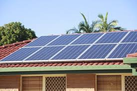

Solar energy is a powerful, renewable energy source derived from the sun's radiation. This energy can be converted into electricity or heat and has numerous applications ranging from residential power generation to large-scale industrial processes. As one of the most sustainable forms of energy, solar power offers a multitude of benefits that contribute to a cleaner and more sustainable future.
